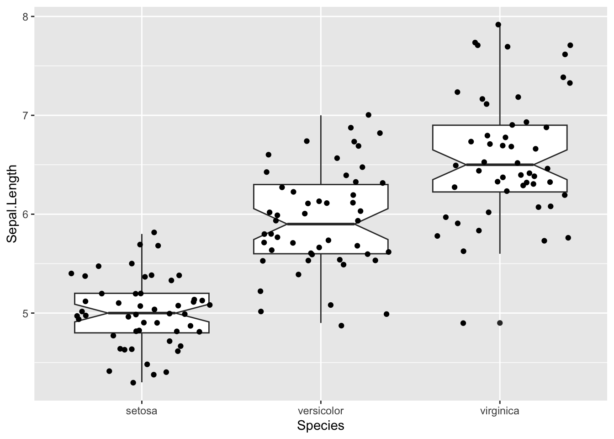
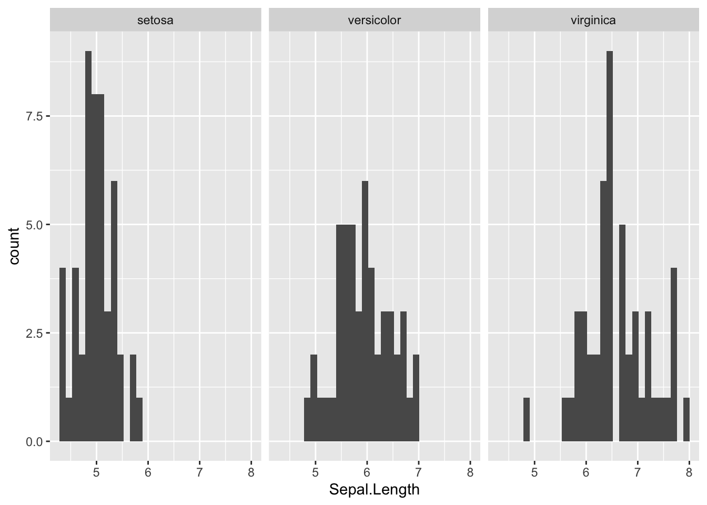
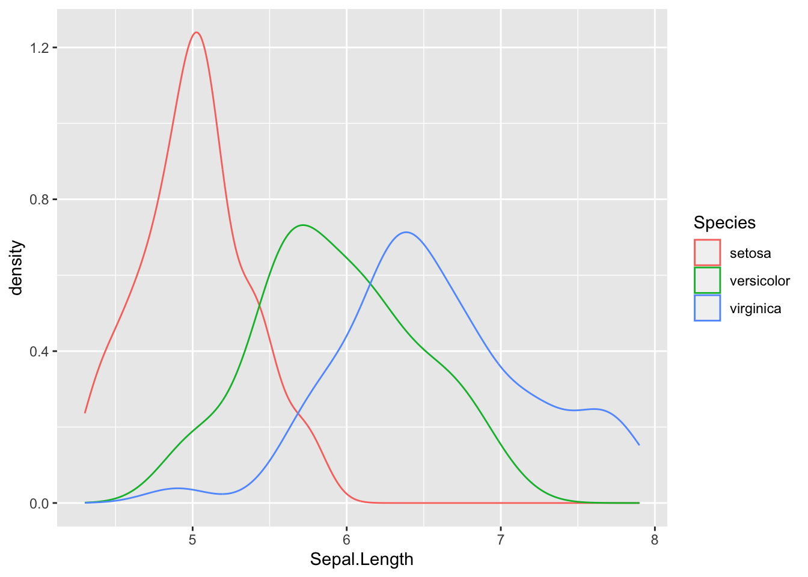

7 Esplorare con i numeri
v1.1.1 5/11/2023
7.1 Cosa c’è da imparare in questo capitolo.
In questo capitolo potrai imparare qualche concetto di base sull’a statistica descrittiva’analisi esplorativa dei dati e sui test delle ipotesi. In sostanza, quando abbiamo un insieme di dati, piccolo o grande che sia, il nostro scopo è, come minimo, descriverlo in maniera sintetica e cercare di estrarre informazioni che servano a supportare, contraddire o formulare ipotesi147. Nel capitolo 6 abbiamo visto come possiamo utilizzare diversi tipi di grafici per riassumere ed esplorare dati qualitativi o quantitativi, raggruppati o meno, e qualche funzione per calcolare statistiche riassuntive è già comparsa diverse volte. Come sempre cercherò di usare un approccio basato sull’uso degli strumenti, più “moderni”, del tidyverse, ma dovrò anche ricordare, quando possibile nelle note, l’uso delle funzioni di base.
Infine, si assume che tu abbia una conoscenza almeno elementare della statistica: non mi soffermerò particolarmente sui concetti di statistica e parametro, campione e popolazione né sui pro e contro delle varie statistiche (descrittive)media, mediana, etc.). Se ne hai bisogno, suggerisco di fare riferimento alle numerose risorse più orientate alla statistica, segnalate nella sezione 7.9.
Questo è un capitolo piuttosto corto (se ti sembra lungo è perché c’è parecchio codice), e credo tu possa fare uno sforzo per leggerlo tutto. In alternativa, ti consiglio una lettura delle Sezioni 7.3 e 7.7 “saltando” tutte le Sottosezioni che hanno titoli in corsivo.
7.2 Una piccola premessa: gruppi, livelli, sottoinsiemi.
Quasi sempre, in una stessa tabella (data frame o tibble, ma lo stesso vale per altri tipi di oggetti a due dimensioni) troviamo osservazioni appartenenti a gruppi diversi (magari definiti, in maniera gerarchica148 da più variabili qualitative). In generale, una volta calcolate le statistiche riassuntive, ci può essere utile raccoglierle in una nuova tabella (che a sua volta potrebbe essere usata per nuove elaborazioni grafiche e statistiche), possibilmente in maniera tidy, vedi paragrafo 4.1.5. Le funzioni che useremo per riassumere ed esplorare i dati operano su vettori e tipicamente su vettori atomici, ma qualcuna opera su vettori generici, vedi sezione 4.4. Tutte restituiscono come risultato un valore singolo o un nuovo oggetto contenente più di un valore, che può essere stampato a console con il comando generico print(). Tuttavia, a noi interessa in genere riutilizzare i risultati o raccoglierli in una nuova tabella, che potrebbe a sua volta diventare l’oggetto di nuove elaborazioni. L’approccio che dobbiamo usare è quello di dividere il data set in gruppi, applicare la funzione e combinare i risultati in un nuovo oggetto (split - apply - combine). Farlo in maniera interattiva (operando nella console, un comando per volta) sarebbe lungho e soggetto ad errori. Per questo sia in R base, che nei pacchetti più antichi (come per esempio plyr, reshape e reshape2), che nei pacchetti più recenti (dplyr, purrr, broom), compaiono funzioni che in maniera rapida ed elegante fanno questo lavoro. Inoltre, altrettanto spesso siamo interessati ad applicare le funzioni non ad una singola variabile, ma a più variabili. Anche qui, esistono funzioni che permettono di farlo in maniera automatizzata. Comprendere bene questi approcci senza aver compreso gli elementi di data wrangling e programmazione che saranno descritti nel capitolo 9 non è facilissimo. Cercherò comunque di usare le funzioni più semplici e dirette.
7.3 Statistiche riassuntive per dati continui.
Qui userò un data set piuttosto semplice (MASS::survey) che abbiamo già visto nel capitolo 6. Come esercizio, prova poi ad applicare lo stesso approccio ad altri data set (per esempio ggplot2::mpg oppure ai data set di R base mpg o women): cerca per favore di non eseguire meccanicamente i comandi ma di fare uno sforzo per interpretare i risultati.
survey raccoglie dati ottenuti in un questionario somministrato a studenti dell’Università di Adelaide, in Australia. I dati non sono ordinati. Prova a visualizzarli ed esplorarli con i seguenti comandi:
# ricordati di installare e caricare il pacchetto necessario
# library(MASS)
data(survey)
View(survey)Il risultato dovrebbe essere più o meno quello della tabella 7.1.
| Sex | Wr.Hnd | NW.Hnd | W.Hnd | Fold | Pulse | Clap | Exer | Smoke | Height | M.I | Age |
|---|---|---|---|---|---|---|---|---|---|---|---|
| Female | 18.5 | 18.0 | Right | R on L | 92 | Left | Some | Never | 173.00 | Metric | 18.250 |
| Male | 19.5 | 20.5 | Left | R on L | 104 | Left | None | Regul | 177.80 | Imperial | 17.583 |
| Male | 18.0 | 13.3 | Right | L on R | 87 | Neither | None | Occas | NA | NA | 16.917 |
| Male | 18.8 | 18.9 | Right | R on L | NA | Neither | None | Never | 160.00 | Metric | 20.333 |
| Male | 20.0 | 20.0 | Right | Neither | 35 | Right | Some | Never | 165.00 | Metric | 23.667 |
| Female | 18.0 | 17.7 | Right | L on R | 64 | Right | Some | Never | 172.72 | Imperial | 21.000 |
| Male | 17.7 | 17.7 | Right | L on R | 83 | Right | Freq | Never | 182.88 | Imperial | 18.833 |
| Female | 17.0 | 17.3 | Right | R on L | 74 | Right | Freq | Never | 157.00 | Metric | 35.833 |
| Male | 20.0 | 19.5 | Right | R on L | 72 | Right | Some | Never | 175.00 | Metric | 19.000 |
| Male | 18.5 | 18.5 | Right | R on L | 90 | Right | Some | Never | 167.00 | Metric | 22.333 |
Il codice che segue ordina il data frame, ne estrae alcune righe e alcune colonne e usa due funzioni, una più “antica” e una più moderna, per riassumerli. I comandi utilizzati per filtrare e selezionare sono quelli di dplyr un pacchetto del tidyverse e sono collegati da pipes, un modo semplice per collegare catene i comandi reso disponibile dal pacchetto magrittr149.
Procediamo prima con la funzione summary()
survey_ridotto <- survey %>%
dplyr::filter(Sex == "Male") %>%
dplyr::select(Pulse, Exer, Smoke, Height, Age)
surv_summary <- summary(survey_ridotto)
surv_summary## Pulse Exer Smoke Height Age
## Min. : 35.0 Freq:65 Heavy: 6 Min. :154.9 Min. :16.75
## 1st Qu.: 65.0 None:13 Never:89 1st Qu.:172.8 1st Qu.:17.92
## Median : 72.0 Some:40 Occas:10 Median :180.0 Median :18.88
## Mean : 73.2 Regul:12 Mean :178.8 Mean :20.33
## 3rd Qu.: 80.0 NA's : 1 3rd Qu.:185.0 3rd Qu.:20.29
## Max. :104.0 Max. :200.0 Max. :70.42
## NA's :22 NA's :12Il data frame che ho prodotto contiene solo gli studenti maschi (le osservazioni corrispondenti sono state estratte con dplyr::filter()) e solo 5 delle variabili originali (estratte con select(); se ne vuoi conoscere la natura prova con str(summary_ridotto)). Il risultato (che è stato assegnato ad un nome) è usato come argomento della funzione summary() e, come puoi facilmente vedere, è stato assegnato ad un nome, per poi essere “stampato” e mostra risultati diversi per i diversi tipi di colonna.
per le due variabili qualitative,
ExereSmoke, viene mostrata la frequenza di ogni livello (si tratta di fattori) e il numero di dati mancanti (NA)per le tre variabili quantitative continue (
Pulse,HeighteAge) vengono mostrati la media e alcuni indicatori non parametrici (mediana, min, max e quartili)150
Ma di che natura è l’oggetto prodotto da summary()? Prova con
>str(surv_summary)Si tratta di un oggetto di classe table e, credimi, se volessi estrarre qualcuno dei valori sareppe più difficile che farlo da un vettore, una matrice o un data frame.
Proviamo adesso con una funzione un po’ più moderna, skimr::skim()
surv_skim <- skim(survey_ridotto)
kable(surv_skim, "html") %>%
kable_styling("striped") %>%
scroll_box(width = "100%")| skim_type | skim_variable | n_missing | complete_rate | factor.ordered | factor.n_unique | factor.top_counts | numeric.mean | numeric.sd | numeric.p0 | numeric.p25 | numeric.p50 | numeric.p75 | numeric.p100 | numeric.hist |
|---|---|---|---|---|---|---|---|---|---|---|---|---|---|---|
| factor | Exer | 0 | 1.0000000 | FALSE | 3 | Fre: 65, Som: 40, Non: 13 | NA | NA | NA | NA | NA | NA | NA | NA |
| factor | Smoke | 1 | 0.9915254 | FALSE | 4 | Nev: 89, Reg: 12, Occ: 10, Hea: 6 | NA | NA | NA | NA | NA | NA | NA | NA |
| numeric | Pulse | 22 | 0.8135593 | NA | NA | NA | 73.19792 | 11.999667 | 35.00 | 65.000 | 72.000 | 80.0000 | 104.000 | ▁▃▇▅▁ |
| numeric | Height | 12 | 0.8983051 | NA | NA | NA | 178.82604 | 8.380252 | 154.94 | 172.790 | 180.000 | 185.0000 | 200.000 | ▁▅▇▇▁ |
| numeric | Age | 0 | 1.0000000 | NA | NA | NA | 20.33196 | 6.069863 | 16.75 | 17.917 | 18.875 | 20.2915 | 70.417 | ▇▁▁▁▁ |
Come puoi vedere facilmente, skim agisce sulle variabili quantitative producendo come risultato un data frame151 “tidy” (vedi paragrafo 4.1.5) con gli stessi risultati ottenuti per le variabili quantitative da summary, ma con una colonna in più che mostra un istogramma sparkline (un modo compresso per rappresentare grafici in una linea di testo o una cella di tabella). Per i fattori vengono calcolate le frequenze assolute dei livelli. Incidentalmente, skim() può essere collegato alle istruzioni precedenti con una pipe.
Ora, pensa un attimo a quali grafici potrebbero essere utili per riassumere sia le variabili qualitative che quantitative di questa tabella e scrivi tu stesso i comandi usando ggplot2 come sistema grafico.
7.3.1 Misure di tendenza centrale e di variabilità.
Al di là della esplorazione grafica di un campione (magari fosse una popolazione!) di osservazioni, l’obiettivo di un* scienziat* è generalmente quello di riassumere, con pochi numeri, tipicamente qualche misura di tendenza centrale e di variabilità o incertezza, i dati. Di seguito ti presento una lista delle funzioni più importanti152.
Misure di tendenza centrale: hanno lo scopo di mostrare dove è localizzato il centro della distribuzione; misure diverse sono adatte a distribuzioni diverse e le diverse misure possono essere più o meno sensibili a dati estremi
media aritmetica:
mean(x, ...)adatta soprattuto a distribuzioni simmetriche e, in particolare a distribuzioni normali, può essere molto sensibile ai dati estremi (outlier)media winsorizzata:
mean(x, trim = 0.05, ...)come la media aritmentica ma esclude i valori più estremi (in questo esempio il 5% per entrambi gli estremi); adatta quando si sospetta la presenza di outlier; in distribuzioni simmetriche coincide con la media aritmeticamediana:
median(x, ...)un ottimo indicatore non parametrico, indica il valore al di sotto (o al di sopra) del quale si trova il 50% delle osservazioni
Misure di variabilità: hanno lo scopo di mostrare la variabilità o l’incertezza della distribuzione (altrettanto importante della sua tendenza centrale)
varianza:
var(x, ...), è l’indicatore migliore ma non ha le stesse unità della media (è la somma degli scarti quadratici dalla media diviso i gradi di libertà); la funzione si applica anche a matrici e data frame153, ma in questo caso non restituisce un numero ma una matricedeviazione standard:
sd(x, ...), un indicatore di dispersione molto usato, perché è nelle stesse unità della media e perché, combinato con la media, permette di individuare facilmente in una distribuzione normaledeviazione mediana assoluta:
mad()la mediana delle deviazioni assolute dal centro (tipicamente la mediana) della distribuzione; è un indicatore non parametrico robusto della variabilità o incertezzarange:
range(x, ...), restituisce un vettore numerico di lunghezza 2 con il minimo (min()) e il massimo (max())range interquartile:
IQR(x,...), una misura di variabilità non-parametrica meno robusta della deviazione mediana assoluta.
7.4 Altre funzioni utili.
R base non ha funzioni specifiche per la media geometrica (adatta per esempio a distribuzioni log-normali), la media armonica (appropriata per calcolare la media di rapporti o proporzioni) e la moda (il valore più frequente di una distribuzione, corrisponde alla media in una distribuzione normale), il coefficiente di variazione (un modo comodo per esprimere la deviazione standard come frazione della media, adatto a valori continui per scala di rapporti, vedi paragrafo 4.1.2) e l’errore standard della media (una stima della variabilità delle medie campionarie)154. Puoi facilmente trovare in rete il modo per costruire funzioni che calcolano queste statistiche.
Altre funzioni interessanti sono:
weighted.mean(x, w, ...): restituisce la media pesataquantile(x, ...): restituisce uno o più (default) percentili di una distribuzione (quindi un vettore di lunghezza ≥1)fivenum(x, ...): la funzione che restituisce i 5 numeri di Tukey (se non ti ricordi che sono consulta il paragrafo 6.8.2)stem(x, ...):stem and leaf plots, un sistema molto preciso per mostrare la distribuzione di un campione in una maniera che combina elementi grafici e numericit.test(x, ): è una funzione che consente di eseguire varie versioni del test t di Student per il confronto fra medie (dati appaiati o meno, con varianza costante o meno); se si indica solo il vettore numerico x restituisce un test che valuta l’ipotesi nulla che la media della popolazione non sia significativamente diversa da 0 e, fra le altre cose, permette di ricavare l’intervallo di confidenza della media; il risultato però è una lista di classehtest, dalla quale bisogna estrarre i valori di interesse; come molti altri test delle ipotesi, i risultati non sonotidy: nel paragrafo 7.5.3 vedremo come renderli più ordinati (e metterli sotto forma di data frame)
Tieni presente che tutte queste funzioni, con l’eccezione di var(), usano come input un vettore numerico (vedi paragrafo 4.5.1155) e restituiscono vettori di lunghezza ≥ 1 (sapere cosa viene fuori da una funzione è piuttosto importante). Ricorda che questi possono essere all’interno di un oggetto più complesso. In ogni caso, se sono presenti missing data (NA in R, vedi 4.1.6) le statistiche non possono essere calcolate. Per poterlo fare è necessario escluderli, eliminandoli dal vettore (sconsigliato) o usando l’apposita opzione presente in molte funzioni (na.rm = T, attenzione ai default!). Nota anche che alcune funzioni permettono, di fatto, di ottenere una stima (campionaria) dei parametri di una distribuzione. Mentre questo è probabilmente vero per la distribuzione delle medie campionarie (ti ricordi del teorema del limite centrale? Se no prova a chiedere a chatGPT…), non lo è sempre, e media e deviazione standard hanno poco valore per distribuzioni asimmetriche o, peggio, multimodali. In molti casi è sicuramente meglio usare indicatori più robusti, non parametrici (mediana, mad).
7.4.1 Lavorare sui vettori.
Giusto perché in qualche situazione può servire, ti mostro come usare le funzioni che ho appena illustrato lavorando su vettori (ma anche singole colonne di data frame). Prima di tutto, nota come R Markdown (il particolare tipo di dialetto di Markdown usato per scrivere questo testo) ti consente di usare funzioni in line per inserire dei risultati in un testo (una cosa piuttosto utile), per esempio media ± deviazione standard dell’altezza degli studenti di sesso maschile nel data set survey è 178.83 ± 8.38156. Le funzioni usate per ottenere questi risultati possono essere usate per mandare i risultati alla console. Guarda cosa fa il codice successivo:
# applicare una singola funzione, una variabile alla volta può essere noioso ma utile
mean(survey_ridotto$Height, na.rm = T) ## [1] 178.826## [1] 178.83## [1] 8.380252# se tutte le variabili fossero numeriche potrei "applicare" una funzione ad
# un margine
medie <- apply(survey_ridotto[, c(1,4,5)], 2, mean, trim = 0.1, na.rm = T)
medie## Pulse Height Age
## 72.88462 179.00326 19.15194## [1] "numeric"# due alternative
# sapply, una funzione di base che, a differenza di apply semplifica l'output
# e lavora per colonne
# qui calcolo le medie winsorizzate
medie_sapply <- sapply(survey_ridotto[, c(1,4,5)], mean, na.rm = T, trim = 0.1)
medie_sapply## Pulse Height Age
## 72.88462 179.00326 19.15194## [1] "numeric"# map_dbl, una funzione del pacchetto purrr del tidyverse
medie_purrr <- map_dbl(survey_ridotto[, c(1,4,5)], mean, na.rm = T, trim = 0.1)
medie_purrr## Pulse Height Age
## 72.88462 179.00326 19.15194## [1] "numeric"Nota come in alcuni casi i parametri della funzione che viene “applicata” sono aggiunti dopo il nome della funzione stessa. In effetti, ogni volta che incontri ... significa che puoi passare altri argomenti.
Ora prova tu con le funzioni presentate nel paragrafo 7.3.1. Incidentalmente, combinando varie funzioni in una funzione definita dall’utente è possibile ottenere una funzione che restituisce risultati multipli, magari sotto forma di un vettore con nomi, piuttosto utile in alcune situazioni.
7.4.2 Funzioni che producono statistiche riassuntive.
Tre funzioni utili e con default piuttosto semplici per calcolare contemporaneamente i valori di più statistiche sono:
Hmisc::describe(): applicabile a vari oggetti, ma restituisce una lista, scomodapastecs::stat.desc(): restituisce un data frame, ma i risultati sono trasposti rispetto a come sarebbe carino averli per metterli in una tabella di dati riassuntivipsych::describe(): restituisce un data frame, molte opzioni utili (include per esempio la curtosi e l’asimmetria, skewness in inglese, due parametri utili per capire la forma della distribuzione), e i risultati sono orientati correttamente
Prova tu stess*
Hmisc::describe(survey_ridotto[, c(1,4,5)])
pastecs::stat.desc(survey_ridotto[, c(1,4,5)])
psych::describe(survey_ridotto[, c(1,4,5)])Nota che due di queste funzioni hanno lo stesso nome: per essere sicuri di invocare quella giusta, se sono caricati entrambi i pacchetti, bisogna utilizzare anche il nome del pacchetto!!!
7.4.3 Statistiche, ordinate.
Oltre a skim() è possibile usare il verbo summarise() di dplyr per calcolare diverse utili statistiche riassuntive. Come vedremo nel capitolo 9, summarise(), a differenza di mutate() prende un vettore di valori e restituisce un singolo valore. Inoltre, alcune funzioni helper, come across() possono servire per applicare facilmente più statistiche a variabili multiple. Il risultato di queste operazioni è sempre un data frame (o meglio, una tibble) ed è possibile usare le pipe. Nota come con dplyr non è necessario usare l’operatore $ per accedere alle variabili:
# qui i risultati vengono solo stampati, non assegnati
survey_ridotto %>% dplyr::summarise(mpulse = mean(Pulse, na.rm = T, trim = 0.1),
mheight = mean(Height, na.rm = T, trim = 0.1))## mpulse mheight
## 1 72.88462 179.0033# ripetere i nomi delle variabili è tedioso
survey_ridotto %>%
dplyr::summarise(across(where(is.numeric), ~mean(.x, na.rm = T, trim = 0.1)))## Pulse Height Age
## 1 72.88462 179.0033 19.15194# o, addirittura, con funzioni multiple, passate come lista
media_sd <- list(
media_w = ~mean(.x, na.rm = T, trim = 0.1),
sd = ~sd(.x, na.rm = T)
)
survey_ridotto %>% dplyr::summarise(across(where(is.numeric), media_sd))## Pulse_media_w Pulse_sd Height_media_w Height_sd Age_media_w Age_sd
## 1 72.88462 11.99967 179.0033 8.380252 19.15194 6.069863# infine, con purrr; qui prima usiamo select per estrarre le colonne
# numeriche, poi passiamo la funzione di interesse e restituiamo un
# data frame; i parametri sono passati all'esterno della funzione
survey_ridotto %>%
dplyr::select(where(is.numeric)) %>%
map_df(mean, na.rm = T, trim = 0.1) ## # A tibble: 1 × 3
## Pulse Height Age
## <dbl> <dbl> <dbl>
## 1 72.9 179. 19.2Insomma, molti modi per pelare un gatto…
7.4.4 Statistiche riassuntive per gruppi.
I dati reali sono spesso raggruppati sulla base di variabili categoriche (che possono essere indicate da fattori). Nel capitolo 6 ho già mostrato come sia possibile esplorare, p.es. con dei box plot, istogrammi o grafici a densità, gruppi diversi di dati in un data frame. Qui ti mostrerò alcune funzioni che operano per gruppi
doBy::summaryBy()psych::describeBy()dplyrcongroup_by()esummarise()
Ovviamente, gli stessi risultati possono essere ottenuti, con qualche difficoltà in più, con R base: prova ad esplorare l’aiuto di aggregate() e by().
Cominciamo con doBy::summaryBy(), che ha il vantaggio di accettare funzioni multiple e restituire un data frame, ma ha una sintassi un po’ curiosa, con le variabili su cui fare i calcoli e quella che li raggruppa definite da una formula. Qui non abbiamo bisogno di selezionare uno dei due gruppi di survey
# creo una funzione definita dall'utente con le funzioni che mi interessano
Fun_riass <- function(x, ...){
c(
media = mean(x, na.rm = T, ...),
dev_st = sd(x, na.rm = T),
num_non_na = length(!is.na(x))
)
}
doBy::summaryBy(cbind(Pulse, Height, Age) ~ Sex, data = survey, FUN = Fun_riass)## Sex Pulse.media Pulse.dev_st Pulse.num_non_na Height.media Height.dev_st
## 1 Female 75.12632 11.40664 118 165.6867 6.151777
## 2 Male 73.19792 11.99967 118 178.8260 8.380252
## 3 <NA> 73.00000 NA 1 172.0000 NA
## Height.num_non_na Age.media Age.dev_st Age.num_non_na
## 1 118 20.40753 6.906053 118
## 2 118 20.33196 6.069863 118
## 3 1 21.50000 NA 1Oggettivamente bruttino, ma permette di fare cose interessanti ed è altamente personalizzabile.
psych::describeBy() è un’estensione di psych:describe(); molto comodo, restituisce un data frame in un formato facile da utilizzare; anche qui è possibile usare una formula:
##
## Descriptive statistics by group
## Sex: Female
## vars n mean sd median trimmed mad min max range skew
## Height 1 102 165.69 6.15 166.75 165.90 5.32 150 180.34 30.34 -0.33
## Pulse 2 95 75.13 11.41 75.00 75.19 10.38 40 104.00 64.00 -0.14
## kurtosis se
## Height -0.32 0.61
## Pulse 0.41 1.17
## ------------------------------------------------------------
## Sex: Male
## vars n mean sd median trimmed mad min max range skew
## Height 1 106 178.83 8.38 180 179.00 7.41 154.94 200 45.06 -0.20
## Pulse 2 96 73.20 12.00 72 72.88 11.86 35.00 104 69.00 0.11
## kurtosis se
## Height -0.11 0.81
## Pulse 0.24 1.22Infine, ecco un po’ di soluzioni tidy, un pochino più verbose, ma con un codice più semplice da leggere157; i gruppi sono prodotti dalla funzione group_by(), che restituisce un grouped_df. Abbastanza prevedibilmente, per eliminare i gruppi, che restano nei risultati, si usa ungroup().
## gropd_df [237 × 12] (S3: grouped_df/tbl_df/tbl/data.frame)
## $ Sex : Factor w/ 2 levels "Female","Male": 1 2 2 2 2 1 2 1 2 2 ...
## $ Wr.Hnd: num [1:237] 18.5 19.5 18 18.8 20 18 17.7 17 20 18.5 ...
## $ NW.Hnd: num [1:237] 18 20.5 13.3 18.9 20 17.7 17.7 17.3 19.5 18.5 ...
## $ W.Hnd : Factor w/ 2 levels "Left","Right": 2 1 2 2 2 2 2 2 2 2 ...
## $ Fold : Factor w/ 3 levels "L on R","Neither",..: 3 3 1 3 2 1 1 3 3 3 ...
## $ Pulse : int [1:237] 92 104 87 NA 35 64 83 74 72 90 ...
## $ Clap : Factor w/ 3 levels "Left","Neither",..: 1 1 2 2 3 3 3 3 3 3 ...
## $ Exer : Factor w/ 3 levels "Freq","None",..: 3 2 2 2 3 3 1 1 3 3 ...
## $ Smoke : Factor w/ 4 levels "Heavy","Never",..: 2 4 3 2 2 2 2 2 2 2 ...
## $ Height: num [1:237] 173 178 NA 160 165 ...
## $ M.I : Factor w/ 2 levels "Imperial","Metric": 2 1 NA 2 2 1 1 2 2 2 ...
## $ Age : num [1:237] 18.2 17.6 16.9 20.3 23.7 ...
## - attr(*, "groups")= tibble [3 × 2] (S3: tbl_df/tbl/data.frame)
## ..$ Sex : Factor w/ 2 levels "Female","Male": 1 2 NA
## ..$ .rows: list<int> [1:3]
## .. ..$ : int [1:118] 1 6 8 11 13 14 16 17 25 31 ...
## .. ..$ : int [1:118] 2 3 4 5 7 9 10 12 15 18 ...
## .. ..$ : int 137
## .. ..@ ptype: int(0)
## ..- attr(*, ".drop")= logi TRUE# un primo esempio con un paio di funzioni e summarise
survey %>%
group_by(Sex) %>%
dplyr::summarise(
media_alt = mean(Height, na.rm = T),
sd_alt = sd(Height, na.rm = T)
)## # A tibble: 3 × 3
## Sex media_alt sd_alt
## <fct> <dbl> <dbl>
## 1 Female 166. 6.15
## 2 Male 179. 8.38
## 3 <NA> 172 NA# un secondo esempio: elimino gli NA da Sex e uso due variabili per raggruppare
survey %>%
dplyr::filter(!is.na(Sex) & !is.na(Exer)) %>%
group_by(Sex, Exer) %>%
dplyr::summarise(
media_alt = mean(Height, na.rm = T),
sd_alt = sd(Height, na.rm = T)
)## `summarise()` has grouped output by 'Sex'. You can override using the `.groups`
## argument.## # A tibble: 6 × 4
## # Groups: Sex [2]
## Sex Exer media_alt sd_alt
## <fct> <fct> <dbl> <dbl>
## 1 Female Freq 167. 6.42
## 2 Female None 163. 4.80
## 3 Female Some 165. 5.89
## 4 Male Freq 180. 7.94
## 5 Male None 174. 9.62
## 6 Male Some 178. 8.20# un terzo esempio, con funzioni multiple e variabili multiple
# selezionate sulla base del nome, non del tipo
survey %>%
dplyr::filter(!is.na(Sex) & !is.na(Exer)) %>%
group_by(Sex, Exer) %>%
dplyr::summarise(across(c(Height, Pulse), media_sd))## `summarise()` has grouped output by 'Sex'. You can override using the `.groups`
## argument.## # A tibble: 6 × 6
## # Groups: Sex [2]
## Sex Exer Height_media_w Height_sd Pulse_media_w Pulse_sd
## <fct> <fct> <dbl> <dbl> <dbl> <dbl>
## 1 Female Freq 167. 6.42 73.5 12.5
## 2 Female None 163. 4.80 71.4 11.4
## 3 Female Some 165. 5.89 77.0 10.3
## 4 Male Freq 180. 7.94 70.2 9.59
## 5 Male None 174. 9.62 80.1 15.2
## 6 Male Some 178. 8.20 75.9 13.5Perché non provare a fare lo stesso con R base? In effetti, il codice non è altrettanto semplice da seguire e l’output è più bruttino. Prova questo nella console:
aggregate(cbind(Pulse, Height) ~ Sex + Exer, data = survey, FUN = mean, na.rm = T)7.5 Ma è normale?
La distribuzione normale, o Gaussiana, è un tipo di distribuzione continua di probabilità piuttosto utile perché molte variabili che descrivono fenomeni naturali (e non solo) sono normalmente distribuite e perché, nota la media e la varianza, è facile calcolarne la distribuzione di densità di probabilità. Inoltre, nella statistica frequentista, è abbastanza comune che si assuma che le distribuzioni di variabili da sottoporre a test statistici siano normali e che da queste assunzioni dipenda quanto il livello di significatività al quale si rigetta un’ipotesi nulla corrisponda effettivamente a quello specificato158. Naturalmente, qui, come in molti altri casi, usiamo un modello (per esempio gli errori sono normalmente distribuiti, con media 0 e varianza \(\sigma\)) e sarebbe opportuno verificare che questo modello sia aderente alla realtà. Per dimostrare alcuni metodi con i quali si può verificare graficamente e con test inferenziali che le osservazioni per una variabile siano normalmente distribuiti useremo Iris, un famoso data set storicamente utilizzato per illustrare l’analisi lineare discriminante159.
Il data set mostra le misure per la lunghezza e la larghezza dei petali e dei sepali per tre specie di Iris ( I. setosa, I. versicolor e I. virginica), con campioni (si assume estratti in modo casuale da una popolazione più grande di fiori) di 50 osservazioni ciascuno. Possiamo usare il data set per:
visualizzare le differenze fra le tre specie
usare le statistiche (media e varianza) dei campioni per fare inferenze sulla media e varianza delle popolazioni da cui sono estratti
controllare che l’assunzione che i dati siano normalmente distribuiti non possa essere rifiutata usando:
dei (normal) probability plot
un test delle ipotesi, per esempio il test Shapiro-Wilks
shapiro.test(), il test di Anderson-Darlingnortest::ad.test()o quello di Kolmogorov-Smirnov (Lilliefors)nortest::lillie.test()
L’uso di questa funzione ci darà modo di esplorare l’uso dei test delle ipotesi in R e la natura degli oggetti che essi generano. Tutti e tre i test sono volti a rifiutare o accettare l’ipotesi nulla che i dati provengono da una distribuzione normale. Tuttavia, se l’ipotesi nulla H0 viene scartata non ci dicono nulla sulla forma reale della distribuzione.
Naturalmente, prima di iniziare, dovresti provare a ricordare come, nel capitolo 6 ti ho mostrato alcuni tipi di rappresentazioni dei dati particolarmente adatti a mostrare la distribuzione delle osservazioni (istogrammi, box plot, density plot etc.). Prova quindi a calcolare statistiche di base per gruppi per almeno una variabile e a rappresentarne graficamente in uno o due modi la distribuzione delle osservazioni. Se proprio non ci riesci troverai esempi di codice nel paragrafo 7.8.
7.5.1 Normal probability plot.
I probability plots della figura 7.1 sono grafici che confrontano la distribuzione campionaria dei quantili con quella attesa sulla base di una certa distribuzione di proabbilità. Qui userò le funzioni di ggplot2 (anche se R base mette a disposizione le funzioni qqnorm() e qqline())
iris %>%
ggplot(aes(sample = Sepal.Length, shape = Species)) +
geom_qq() +
geom_qq_line() +
labs(
x = "quantili teorici",
y = "quantili del campione",
caption = str_wrap("Fisher, R. A. (1936) The use of multiple measurements in taxonomic problems. Annals of Eugenics, 7, Part II, 179–188.",80)
)Figura 7.1: Normal probability plots con ggplot2: lunghezza dei sepali per diverse specie di Iris
Naturalmente con l’opzione distribution = stats::qnorm è possibile scegliere distribuzioni parentali diverse dalla normale.
7.5.2 Test statistici per la normalità.
R base mette a disposizione il test di Shapiro-Wilk per testare l’ipotesi nulla che le osservazioni in un dato vettore siano distribuite normalmente. La funzione da utilizzare è shapiro.test(). Prova prima di tutto ad esplorare l’aiuto con:
>?shapiro.testCome molti test statistici, la funzione restituisce una lista. Facciamo un piccolo esempio con il dataset ìris. Qui provo a testare l’ipotesi che i valori della lunghezza dei sepali per la specie setosa siano normalmente distribuiti. Per usare il test, devo prima di tutto estrarre il vettore di dati che mi interessa dal data frame. Nell’esempio successivo userò una combinazione di funzioni del tidyverse160.
# estraggo il vettore test
vettore_test <- iris %>%
dplyr::filter(Species == "setosa") %>%
dplyr::select(Sepal.Length) %>%
pull()
# eseguo il test, assegnando i risultati ad un nome
test_shapiro <- shapiro.test(vettore_test)
# stampo i risultati del test
test_shapiro##
## Shapiro-Wilk normality test
##
## data: vettore_test
## W = 0.9777, p-value = 0.4595## List of 4
## $ statistic: Named num 0.978
## ..- attr(*, "names")= chr "W"
## $ p.value : num 0.46
## $ method : chr "Shapiro-Wilk normality test"
## $ data.name: chr "vettore_test"
## - attr(*, "class")= chr "htest"I singoli elementi della lista possono essere facilmente estratti usando i metodi descritti nella sezione 4.8. Per esempio, per estrarre il valore p (la probabilità con la quale, se l’ipotesi nulla è vera, possono essere ottenuti valori valori uguali o più estremi della statistica test), puoi usare test_shapiro$p.value.
Riportare in maniera chiara, esaustiva e trasparente i risultati di un test statistico è importante. Per esempio, nel caso precedente avremmo potuto scrivere:
- volendo essere logorroici: usando il test di Shapiro-Wilk per la normalità, non è stato possibile scartare l’ipotesi nulla che i dati per la lunghezza dei sepali per la specie Iris setosa siano normalmente distribuiti (W = 0.978, p = 0.46)
In maniera più sintetica: i dati per la lunghezza dei sepali per la specie Iris setosa sono normalmente distribuiti (test di Shapiro-Wilk per la normalità, W = 0.978, p = 0.46)
Nella sezione 7.9 troverai un link ad un documento con diversi esempi.
Prova ora a fare la stessa cosa con i due test offerti dal pacchetto nortest, il test di Anderson-Darling (ad.test()) e il test di Lilliefors (lillie.test()).
7.5.3 Come fare di meglio con i risultati dei test.
Come avrai notato, i risultati del test non sono tidy, nel senso descritto nel paragrafo 4.1.5, e, benché la stampa a console sia piuttosto chiara, non è utile se vuoi presentare i dati di più gruppi (è il caso nostro). Usando R base potremmo per esempio usare un loop per eseguire il test sui tre livelli del fattore Species in iris. Prova ad eseguire questo codice in uno script:
# prima di tutto creo una lista per ospitare i risultati del test
test_shapiro_multipli <- vector(mode = "list", length = nlevels(iris$Species))
for (i in 1:nlevels(iris$Species)){
# assegno i risultati del test allo slot
test_shapiro_multipli[[i]] <- shapiro.test(iris$Sepal.Length[iris$Species==levels(iris$Species)[i]])
# dò il nome corretto allo slot della lista
names(test_shapiro_multipli)[i] <- levels(iris$Species)[i]
}
# stampo la lista
test_shapiro_multipliIl risultato nella console è piuttosto bruttino da vedere (ma ci si può lavorare), ma i risultati sono stati conservati in una lista dalla quale possono essere estratti e riutilizzati per ulteriori analisi.
Un modo più elegante usare i pacchetti purrr e broom con dplyr per produrre un data frame ordinato con i risultati del test:
iris %>%
nest(data = -Species) %>%
mutate(
test = map(data, ~ shapiro.test(.x$Sepal.Length)),
ordinato = map(test, tidy)
) %>%
unnest(ordinato)## # A tibble: 3 × 6
## Species data test statistic p.value method
## <fct> <list> <list> <dbl> <dbl> <chr>
## 1 setosa <tibble [50 × 4]> <htest> 0.978 0.460 Shapiro-Wilk normality…
## 2 versicolor <tibble [50 × 4]> <htest> 0.978 0.465 Shapiro-Wilk normality…
## 3 virginica <tibble [50 × 4]> <htest> 0.971 0.258 Shapiro-Wilk normality…Queste cose diventeranno più chiare se vorrai arrivare al capitolo 9. Ecco però una descrizione passo passo del codice161 da usare in uno script per capire un po’ meglio cosa succede. Nota come .x$Sepal.Length venga usato qui per “pescare” la variabile che ci interessa dai data frame contenuti nella colonna data.
# creo una tibble annidata che contiene una colonna con le specie
# e una colonna con delle tibble contenenti i dati per ciascuna specie
tibble_annidata <- iris %>%
nest(data = -Species)
# uso mutate con la funzione map() di purrr per applicare il
# test ai tre livelli delle specie e poi uso tidy() di broom
# per rioridinare i risultati del test
tibble_risultati <- tibble_annidata %>% mutate(
test = map(data, ~ shapiro.test(.x$Sepal.Length)),
ordinato = map(test, tidy)
)
# uso unnest() per estrarre i risultati in un data frame
tibble_risultati %>% unnest(ordinato)Insomma, mi verrebbero in mente altri modi per fare la stessa cosa, più o meno utili in diverse situazioni. Prova a pensarci anche tu.
7.6 Intervalli di confidenza.
La media e la varianza ottenute usando le osservazioni in uno specifico campione sono delle stime puntuali dei veri parametri della popolazione da cui quel campione è stato estratto. Un altro ipotetico campione risulterebbe in una stima diversa. Prova tu stesso con questo codice, che mostra come campioni di numeri casuali estratti da una distribuzione normale con media 5 e deviazione standard 2 abbiano tutti medie e deviazioni standard diverse.
# estraggo 10000 numeri casuali da una distirbuzione normale con media 5 e
# deviazione standard 2
numeri_casuali <- rnorm(10000, mean = 5, sd = 2)
# calcolo media e deviazione standard
mean(numeri_casuali)
sd(numeri_casuali)
# faccio lo stesso, con campioni più piccoli, creando un data frame con una
# funzione di purrr
numeri_casuali <- map(rep(100,5), rnorm, mean = 5, sd = 2)
medie_sd <- tibble(
medie = map_dbl(numeri_casuali, mean),
devst = map_dbl(numeri_casuali, sd)
)Nota come il codice è sufficientemente generico da poter generare vettori di numeri casuali di qualsiasi lunghezza e con qualsiasi media e deviazione standard.
Nella statistica frequentista, un modo per rappresentare l’incertezza della stima della media è quella di mostrarne l’intervallo di confidenza. Qui proveremo a farlo con la funzione t.test() e alcune utilissime funzioni di broom.
Quando viene usata con i parametri di default su un vettore, t.test() restituisce, fra le altre cose l’intervallo di confidenza della media (ben nascosto nella lista!). Guarda questo esempio con iris; qui uso vettore_test, che contiene i valori della lunghezza dei sepali per la specie Iris setosa (vedi paragrafo 7.5.2):
##
## One Sample t-test
##
## data: vettore_test
## t = 100.42, df = 49, p-value < 2.2e-16
## alternative hypothesis: true mean is not equal to 0
## 95 percent confidence interval:
## 4.905824 5.106176
## sample estimates:
## mean of x
## 5.006Il test appena condotto è l’equivalente di valutare l’ipotesi nulla che la media non è significativamente diversa da 0, usando un test a due code con un livello di significatività \(\alpha\) = 0.05.
Come sempre, sarebbe bello avere i risultati ordinati: la funzione tidy() di broom lo fa per noi:
## # A tibble: 1 × 8
## estimate statistic p.value parameter conf.low conf.high method alternative
## <dbl> <dbl> <dbl> <dbl> <dbl> <dbl> <chr> <chr>
## 1 5.01 100. 2.11e-58 49 4.91 5.11 One Samp… two.sidedQui la variabile parameter contiene i gradi di libertà162.
Ovviamente, usando il codice dimostrato nel paragrafo 7.5.3, possiamo operare in modo da ottenere i risultati per tutti i gruppi del nostro data frame e usare il data frame tidy che otteniamo per fare tabelle e grafici!
medie_conf <- iris %>%
group_by(Species) %>%
nest(data = - Species) %>%
mutate(
test = map(data, ~ t.test(.x$Sepal.Length)),
ordinato = map(test, tidy)
) %>%
unnest(ordinato) %>%
dplyr::select(Species, media = estimate, conf.low, conf.high)
medie_conf## # A tibble: 3 × 4
## # Groups: Species [3]
## Species media conf.low conf.high
## <fct> <dbl> <dbl> <dbl>
## 1 setosa 5.01 4.91 5.11
## 2 versicolor 5.94 5.79 6.08
## 3 virginica 6.59 6.41 6.77O possiamo tirarne fuori un grafico come quello della figura 7.2…
medie_conf %>% ggplot(aes(x = Species)) +
geom_pointrange(aes(y = media, ymin = conf.low, ymax = conf.high)) +
labs(x = "specie",
caption = "Fisher, R. A. (1936) The use of multiple measurements in taxonomic problems. Annals of Eugenics, 7, Part II, 179–188.")Figura 7.2: Media e intervallo di confidenza al 95% per la lunghezza dei sepali di divcerse specie di Iris.
Se non ti senti troppo pigr* potresti provare a migliorare questo grafico o leggere questa vignetta che spiega bene come usare indieme dplyr e broom per ordinare i risultati di test statistici.
Come la media, la varianza campionaria è il migliore stimatore lineare senza bias (BLUE) della varianza della popolazione. In pacchetto DescTools mette a disposizione la funzione VarCI() per calcolare l’intervallo di confidenza di una varianza.
7.7 Riassumere i dati per le variabili categoriche.
I dati categorici possono essere classificati, contati e riassunti in grafici come grafici a barre, a torta, a ventaglio, a mosaico, etc. (vedi sezione 6.7) ma anche in tabelle di frequenza (a una via, one-way) o contingenza (due o più vie, two-, multi-way). In questa sezione useremo prevalentemente il data set Arthritis, ma un altro classico data set per dati categorici è Titanic, che mostra la sopravvivenza dei passeggeri del Titanic in funzione della classe in cui viaggiavano. L’array può essere “esplorato” e convertito in un data frame con i seguenti comandi:
## [1] "table"## , , Age = Child, Survived = No
##
## Sex
## Class Male Female
## 1st 0 0
## 2nd 0 0
## 3rd 35 17
## Crew 0 0
##
## , , Age = Adult, Survived = No
##
## Sex
## Class Male Female
## 1st 118 4
## 2nd 154 13
## 3rd 387 89
## Crew 670 3
##
## , , Age = Child, Survived = Yes
##
## Sex
## Class Male Female
## 1st 5 1
## 2nd 11 13
## 3rd 13 14
## Crew 0 0
##
## , , Age = Adult, Survived = Yes
##
## Sex
## Class Male Female
## 1st 57 140
## 2nd 14 80
## 3rd 75 76
## Crew 192 20Nota come i dati di Titanic siano già tabulati.
7.7.1 Tabelle di frequenza e contingenza.
Anche se i diversi tipi di rappresentazione grafica per dati categorici ci possono dare un’eccellente idea d’insieme sulla distribuzione dei dati nei diversi gruppi, le tabelle di frequenza e contingenza ci danno un’idea precisa del numero di osservazioni in ogni categoria e ci permettono di eseguire test inferenziali (in genere per testare l’ipotesi che le variabili che raggruppano i dati non hanno un effetto significativo sulla frequenza dei dati in ogni cella della tabella). Le tabelle possono essere arricchite calcolando totali e frequenze di riga e colonna.
Come sempre, ci sono diverse funzioni per ottenere lo stesso risultato:
table(): è la funzione di base, molto flessibile (vedi dopo), restituisce una tabella di contingenza, un oggetto di classetable;xtabs(): funzione di base, usa un’interfaccia a formula (vedi dopo), più semplice da gestire ditable(), restituisce lo stesso tipo di oggetti;gmodels::CrossTable(): ha un numero maggiore di opzioni e restituisce un output simile a quello prodotto da SPSS
Prova il seguente codice in uno script per vedere come funziona table(); fai attenzione a cosa va nelle righe e colonne delle tabelle a più vie. Nota anche come gli oggetti di classe table possono essere usati direttamente per la stampa o per produrre grafici (a barre, a torta, a mosaico).
?table
# nota l'uso di with()
# una tabella di frequenza, a una via
una_tabella <- with(Arthritis, table(Improved))
# in alternativa table(Arthritis$Improved)
una_tabella
class(una_tabella)
# una funzione utile per aggiungere somme per le diverse vie o margini è
?addmargins
addmargins(una_tabella,1)
# invece, per trasformare le conte in proporzioni
?prop.table
prop.table(una_tabella)
# una tabella a due vie
tabella_2_vie <- with(Arthritis, table(Treatment,Improved))
# nota che con l'opzione useNA puoi decidere se includere la conta degli NAs
# con le opzioni "no", "ifany", "always"; "ifany"
tabella_2_vie
# per aggiungere margini
margin.table(tabella_2_vie,1)
margin.table(tabella_2_vie,2)
# add sums to all margins
addmargins(tabella_2_vie)
# solo per Treatment
addmargins(tabella_2_vie, 1)
# le due funzioni possono essere combinate
addmargins(prop.table(tabella_2_vie),c(1,2))
pie(una_tabella)
barplot(tabella_2_vie, beside = T, legend = T)Personalmente, preferisco xtabs, perché secondo me l’interfaccia a formula rende più chiaro quello che si vuole fare: dopo la tilde si aggiungono, in sequenza, righe, colonne, strati, separati dal segno +. Se i dati sono già tabulati, come in Titanic_df, le conte vanno sul lato sinistro della formula. Nell’esempio successivo creo gli oggetti tabella senza assegnarli ad un nome.
## , , Sex = Female
##
## Improved
## Treatment None Some Marked
## Placebo 19 7 6
## Treated 6 5 16
##
## , , Sex = Male
##
## Improved
## Treatment None Some Marked
## Placebo 10 0 1
## Treated 7 2 5## Class
## Survived 1st 2nd 3rd Crew
## No 122 167 528 673
## Yes 203 118 178 212Naturalmente, anche in questo caso è possibile usare addmargins(), proptable(), margin.table(), etc.
Nota anche come un oggetto di classe table è un array, quindi è possibile accedere ai diversi strati usando []. Prova questi comandi nella console:
>tabella_3_vie <- xtabs(~Treatment+Improved+Sex, data = Arthritis)
>is.array(tabella_3_vie)
>dim(tabella_3_vie)
>tabella_3_vie[1,,]
>tabella_3_vie[1,2,]Prova tu stess* a esplorare gmodels::CrossTable() con gli stessi data set. Quali sono le opzioni? Che tipo di output è possibile ottenere? Che oggetto restituisce la funzione? Che tipo di test inferenziali è possibile fare?
7.7.2 Grafici a mosaico.
I grafici a mosaico sono un modo visualmente molto efficace di rappresentare dati tabulari. La funzione della grafica di base per ottenere questo tipo di grafici è mosaicplot() che prende come input un oggetto di classe table, che può essere anche creato “al volo”. Prova questo codice nella console:
>mosaicplot(xtabs(~Treatment+Improved+Sex, data = Arthritis), color = 2:3,
main = "Effetto del trattamento sui sintomi dell'artrite")La funzione è utile, per esempio, per vedere rapidamente se un esperimento con diverse variabili esplicative è bilanciato (ogni gruppo individuato da una combinazione di variabili categoriche contiene lo stesso numero di casi).
La funzione vcd::mosaic() è più efficace ma ha una sintassi un po’ più complessa (figura 7.3).
Figura 7.3: I sopravvissuti al disastro del Titanic: un grafico a mosaico
7.8 Veloce veloce
Un po’ di codice per la sezione 7.5. Il codice è un po’ ridondante, in modo che tu lo possa far girare indipendentemente da questo capitolo (ma è necessario che tu installi i pacchetti necessari) e ti permette di ottenere qualche grafico esporativo, senza troppi fronzoli, perché ti basta tornare al capitolo 6.
library(tidyverse)
library(car)
data("iris")
# esplora brevemente i dati
# ometto questi comandi perché ti basta cliccare sulla riga corrispondente
# nel tab Environment
# View(iris)
# str(iris)
# una selezione casuale dei dati
car::some(iris)## Sepal.Length Sepal.Width Petal.Length Petal.Width Species
## 2 4.9 3.0 1.4 0.2 setosa
## 25 4.8 3.4 1.9 0.2 setosa
## 31 4.8 3.1 1.6 0.2 setosa
## 51 7.0 3.2 4.7 1.4 versicolor
## 52 6.4 3.2 4.5 1.5 versicolor
## 63 6.0 2.2 4.0 1.0 versicolor
## 72 6.1 2.8 4.0 1.3 versicolor
## 81 5.5 2.4 3.8 1.1 versicolor
## 122 5.6 2.8 4.9 2.0 virginica
## 149 6.2 3.4 5.4 2.3 virginica# concentriamoci su una sola variabile ma il codice si applica anche alle altre
iris %>%
ggplot(aes(x = Species, y = Sepal.Length)) +
geom_boxplot(notch = T) +
geom_jitter()
## `stat_bin()` using `bins = 30`. Pick better value with `binwidth`.

7.9 Altre risorse.
7.9.1 Risorse in italiano.
Oltre alla wiki che ho citato molte volte potete provare a consultare questo libro che descrive abbastanza bene molti comandi per la statistica descrittiva con R. Per il resto, come di consueto è sufficiente usare le funzioni di ricerca di Google (prova con “statistica descrittiva con R”) per trovare moltissimo materiale (sono pigro anch’io, non mi va di leggerlo) prodotto generalmente a supporto di corsi universitari.
7.9.2 Risorse in inglese.
In inglese c’è un’enorme quantità di materiale. Non credo valga nemmeno la pena di proporre le decinde e decine di pagine web e filmati. Se sei pigr*, oltre ai molti eccellenti testi di statistica di base (che richiedono un po’ di tempo e fatica, ma ne vale la pena), puoi consultare questi testi on line
un eccellente manuale per la statistica nelle scienze biologiche e il suo companion con il codice R (che però usa prevalentemente funzioni di R base)
se proprio vuoi essere minimalista puoi usare Just enough R o YaRrr!
se vuoi guardare testi un pochino più completi prova:
Statistical modeling (specialmente il capitolo 3)
Modern statistics for modern biology è molto completo ma decisamente più difficile da leggere e digerire
Resta fermo il fatto che per usare bene le funzioni di R ad un certo punto bisogna studiarne l’aiuto.
Esempi su come riportare correttamente i risuyltati di un test statistico possono essere trovati qui.
anche se sarebbe buona regola formulare solo ipotesi falsificabili, che restano accettabili finché non si prova che sono false↩︎
un gruppo può contenere dei sottogruppi↩︎
dalla versione 4.1 di R è disponibile una
pipenativa,|>↩︎quindi si combina il risultato delle funzioni
mean()efivenum()↩︎anche qui, se usassi
str(surv_skim)o leggessi l’aiuto diskimne sapresti di più↩︎fai riferimento ad un testo di statistica, anche per capire meglio le differenze fra statistiche, calcolate su un campione e parametri, che rappresentano la popolazione, che poi è quello che ci interessa↩︎
ovvimante a porzioni di data frame che contengono solo dati numerici↩︎
però
ggplot2ha una funzionemean_se();-)↩︎e approfitta per domandarsi che succederebbe se facessi la media di una matrice numerica↩︎
questo risultato è ottenuto scrivendo nel testo le sue funzioni e mettendole fra “``”↩︎
incidentalmente qui non è necessario trasformare le variabili categoriche presenti come caratteri in fattori↩︎
se questo è arabo dovresti leggere un libro di statistica o, per esempio, leggere questo articolo↩︎
una tecnica di analisi statistica multivariata che permette di discriminare dei gruppi sulla base di un certo numero di proprietà↩︎
in R base avrei potuto usare
vettore_test <- iris$Sepal.Length[iris$Species == "setosa"], meno verboso ma anche più oscuro↩︎per riprodurre i risultati ti basta far girare le istruzioni a gruppi, selezionando dalla prima fino ad arrivare prima del segno
%>%che segue l’ultima istruzione che vuoi testare↩︎Sono 1 in meno del numero di osservazioni. Perché? Perché una volta fissata la media, solo n-1 dei valori possono variare liberamente, l’ultimo è determinato dal valore della media e dagli altri valori…↩︎